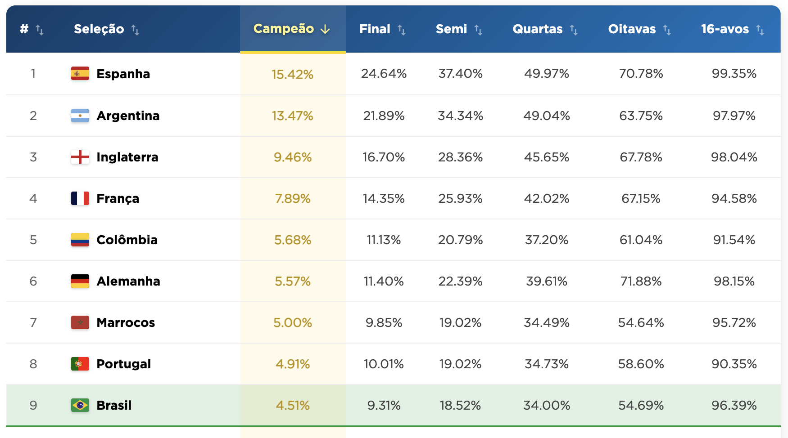

Classificação Geral
Tabela Completa de Probabilidades
Explore o ranking completo das chances de cada seleção alcançar cada fase do mata-mata (16-avos, oitavas, quartas, semis, final) e de erguer o troféu.
Ver Tabela Completa